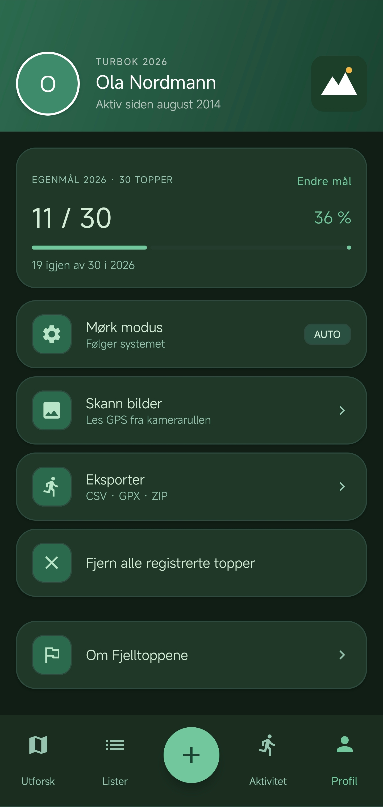

Turbok 2026 · Beta tilgjengelig nå
Hver topp du har stått på, på ett sted.
Fjelltoppene er en personlig turbok i lomma. Oppdag nye topper i nærheten, kryss av de du har vært på, og se framgangen din vokse — fra Dalsnuten til Galdhøpiggen.
3 800+
Registrerte topper
357
Kommuner dekket
100 %
Norsk & gratis

